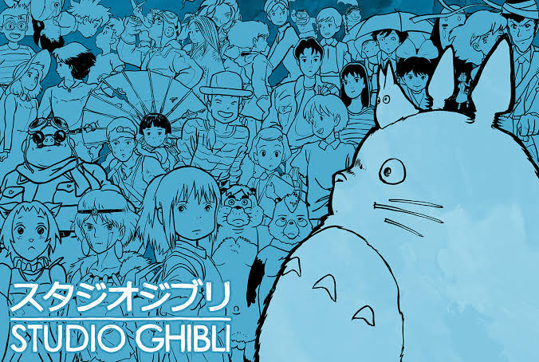
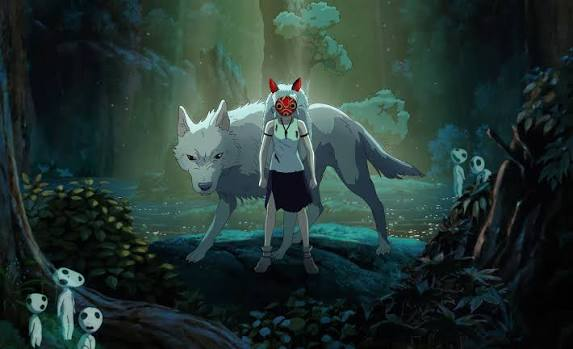
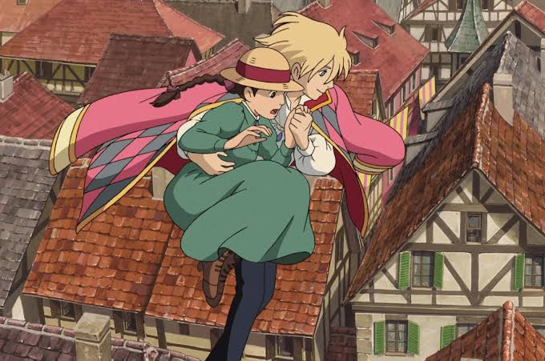
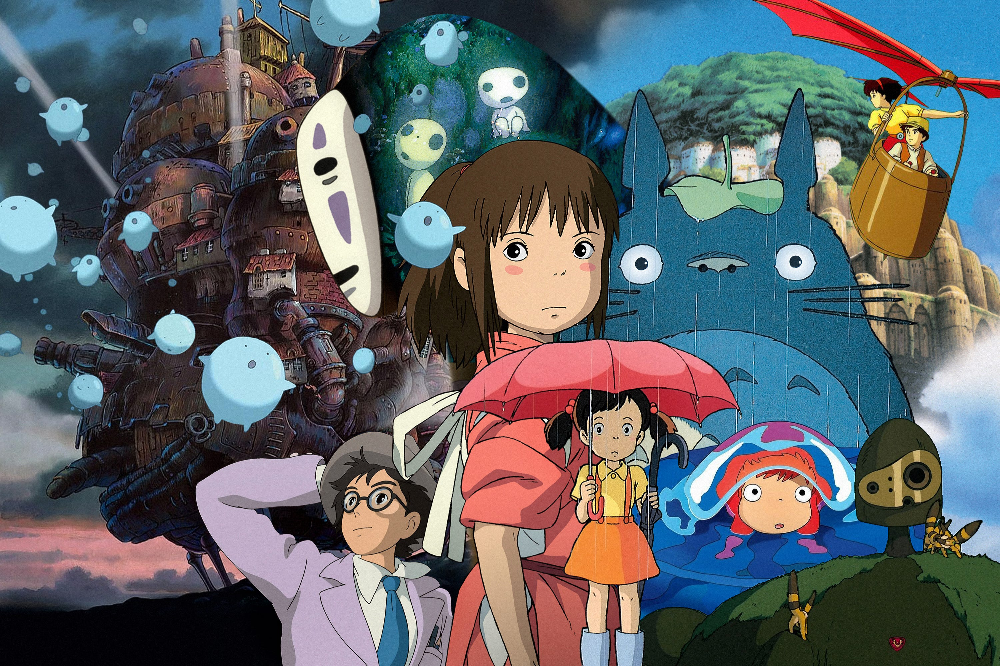

At a time when many studios were switching to computers, Studio Ghibli kept drawing its films largely by hand. Every frame is painted with astonishing care, from blades of rustling grass to bubbling pots of food. This loving attention to detail is one reason the films feel so alive and so real, even when they are full of magic.
A special verb form. The text says Spirited Away “has won” a famous award. won is the past participle. What is the past participle of the verb draw?
Ghibli films are known for their brave young heroes — often ordinary girls who show great courage. Rather than simple goodies and baddies, the stories explore kindness, nature and the adventure of growing up. Films such as My Neighbour Totoro, Kiki's Delivery Service and Spirited Away have become famous around the world. In 2003, Spirited Away even won an Academy Award, one of the highest honours in all of film.
🔍 Word clue: courage = being brave when something is hard or scary. 🦁




Read each question twice, then turn the question around to start your answer!
- 1In which country is Studio Ghibli based?
- 2Who founded Studio Ghibli?
- 3Why did Miyazaki choose the name “Ghibli”?
- 4What is unusual about the way Studio Ghibli makes its films?
- 5Think deeper: why do you think Ghibli films are loved by grown-ups as well as children?


The Word
Workshop!
Four missions to sharpen your detective tools. Ready, set… 🔍

Past participles
The past participle is the verb form we use after has, have or had: “Ghibli has drawn many films.”
Regular verbs 😊
Just add -ed
paint → has painted · watch → has watched
Irregular verbs 🤪
They change in their own way — learn them!
draw → has drawn · win → has won